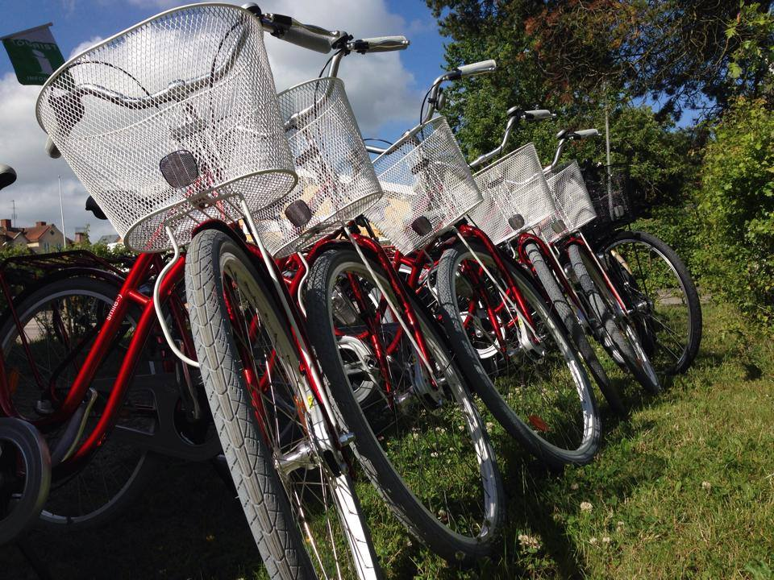

Mit dem Fahrrad am Götakanal entlang
Am besten lässt sich der Götakanal vom Fahrrad aus erleben. Hier radeln Sie am größten Bauwerk Schwedens entlang, nur ein paar Meter von der Wasserkante entfernt. Sie sehen Boote und treffen andere Fahrradfahrer, die die gleiche authentische Umgebung genießen wie Sie. Fühlen Sie, wie sich die Ruhe in Ihnen ausbreitet, wenn Sie die Wellen der Boote gegen die Uferkante plätschern hören. Auf den hübschen Zugwegen entlang des Götakanals können Sie einen entspannten Urlaub genießen, mit gemütlichen Restaurants, netten Cafés und ein klein wenig Bewegung. Vollenden Sie dieses Erlebnis mit unseren „Skeppshults“-Fahrrädern! Diese können Sie bei uns im Café „Visthuset“ mieten.
Preise*:
| Tag: 200:- | Extra Tag Kind: 75:- | ||
| Halber Tag: 120:- | Kindersitz: 50:- | ||
| Extra Tag: 100:- | Fahrradanhänger: 200:- | ||
| Kinderrad: 150:- | gefüllter Picknickkorb: 85:- | ||
| * Inkl. Verleih von Fahrradhelm. Alle Preise in SEK. | |||
Buchen Sie direkt bei uns im Café oder rufen Sie uns an: +46 (0)506 77 75 50
